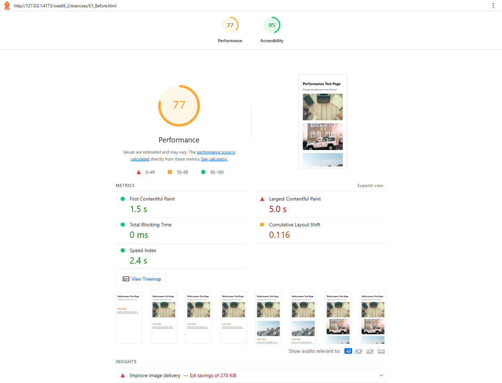
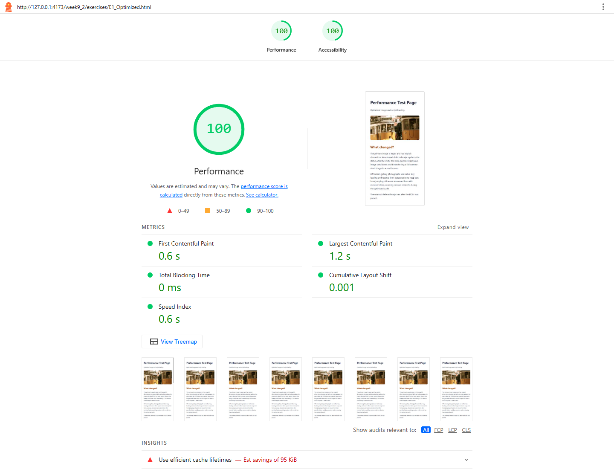

WEEK 9.2 / PERFORMANCE PRACTICE
E1 · Lighthouse audit
Download the exercises explanation PDF
Completed task
Audit the starter, identify the slowest metric and load a corrected page. The audit results and answers are recorded below after measurement.
Open the exercise starter · Open the optimized practice page
The optimized page uses a deferred external app script, smaller local images, explicit image dimensions, and lazy loading only for the lower gallery. The unused jQuery dependency is removed.
Code used
<script src="e1-app.js" defer></script>
<img src="../assets/photo-800.webp" alt="Two yellow trams on tracks along a Lisbon street"
width="800" height="400" fetchpriority="high">
<img src="../assets/movie3.jpg" alt="A wooded coastline"
width="400" height="560" loading="lazy">Measured results and answers
Performance score: 77 before → 100 after.
The longest time-based metric in the starter run was Largest Contentful Paint: 5.0 s. CLS is unitless, so it is not compared numerically with seconds.
The starter loads large random images through remote redirects, with no dimensions, and downloads a blocking jQuery script. The optimized page removes the unused library, serves smaller local images and reserves their layout space; the change also replaces nondeterministic remote photography with local sample assets, so this is a combined exercise comparison, not an isolated measurement of defer.
| Metric | Before | After |
|---|---|---|
| First Contentful Paint | 1.5 s | 0.6 s |
| Largest Contentful Paint | 5.0 s | 1.2 s |
| Speed Index | 2.4 s | 0.6 s |
| Total Blocking Time | 0 ms | 0 ms |
| Cumulative Layout Shift | 0.116 | 0.001 |
Mobile Lighthouse, identical default simulated network/CPU settings, one run each on the local server. Full evidence is available below.
View before-and-after audit screenshots

